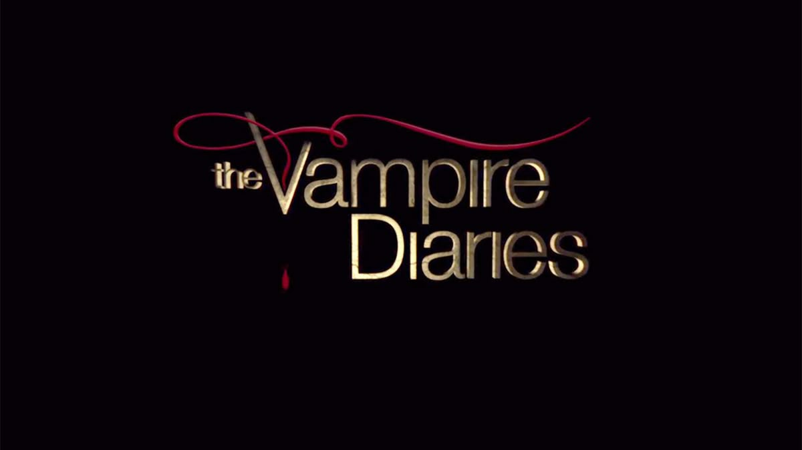

ARQUIVO
CONFIDENCIAL
Entre segredos, escolhas e eternidade
MYSTIC FALLS ARCHIVE • ACESSO: VISITANTE
VISITANTE: VISITANTE
Seis registros foram recuperados dos arquivos da cidade. Abra cada documento e descubra as curiosidades escondidas.

INVESTIGAÇÃO EM ANDAMENTO
Abra os registros para completar o arquivo.
ORIGEM
The Vampire Diaries foi baseada em uma série de livros escrita por L. J. Smith.
Os primeiros livros foram publicados na década de 1990. A adaptação para a televisão manteve personagens e elementos do universo original, mas também apresentou diversas diferenças em relação aos livros.
LOCALIZAÇÃO
A famosa cidade onde a história acontece não existe de verdade.
Dentro da história, Mystic Falls está localizada no estado da Virgínia, nos Estados Unidos. A cidade possui uma longa história relacionada às famílias fundadoras e ao mundo sobrenatural.
CRONOLOGIA
The Vampire Diaries acompanhou seus personagens durante oito temporadas.
A série estreou em 2009 e chegou ao fim em 2017. Ao longo das temporadas, novos personagens, criaturas e mistérios foram adicionados à história.
GRAVAÇÕES
Muitos dos lugares vistos na série podem ser encontrados em uma cidade real.
Covington, no estado da Geórgia, foi uma das principais locações utilizadas nas gravações. Diversos lugares da cidade serviram para representar Mystic Falls.
IDENTIDADE
A atriz não interpretou apenas Elena Gilbert durante a série.
Nina Dobrev também interpretou Katherine Pierce. Apesar da aparência semelhante, Elena e Katherine possuem histórias e personalidades muito diferentes.
UNIVERSO
O universo de The Vampire Diaries continuou além da série principal.
The Originals expandiu principalmente a história da família Mikaelson. Mais tarde, Legacies continuou explorando elementos desse universo sobrenatural.
✓ SEIS REGISTROS RECUPERADOS
Um sétimo registro foi detectado. Para abrir, encontre a chave escondida e informe o código secreto.
O registro final foi recuperado. Nem todos os segredos permanecem enterrados para sempre.
CONSULTADO POR: VISITANTE
Descubra mais sobre personagens, criaturas, histórias e mistérios do universo de The Vampire Diaries.
Explorar The Vampire Diaries →